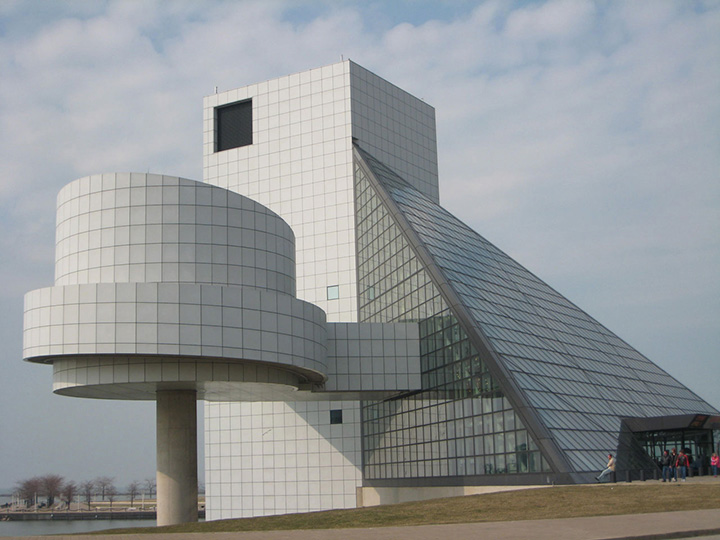
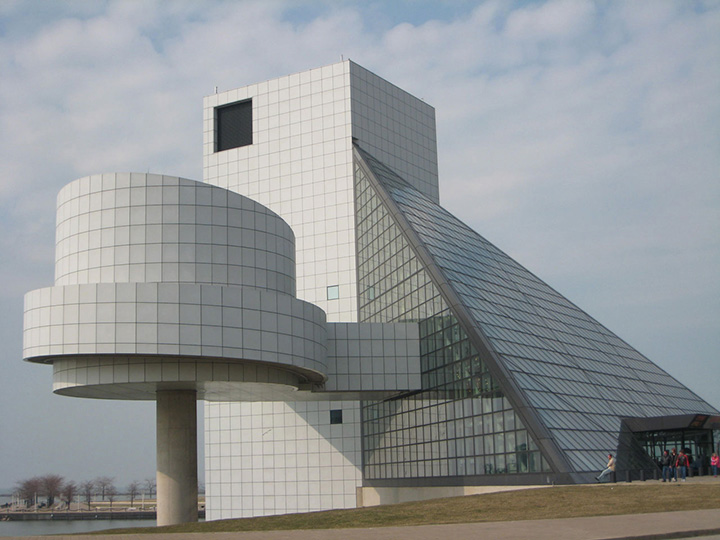

The mission of Watermann Gallery Art Foundation is to raise funds to enhance collections, exhibitions, programs and facilities at the gallery and to fundraise and advise for the City Public Art program.
Volunteering:
The Watermann Gallery is always accepting volunteer applications. As a volunteer, you will be an integral part of facilitating a safe and enjoyable experience for our patrons.
Each community member who donates their time and energy to the arts will help facilitate and enjoyable and memorable experiences for visiting patrons and will be valuable members of the Watermann Gallery family.
Docent/Gallery Guide Volunteers lead tours of the gallery's rotating exhibits.
Tour groups are usually no larger than 20 people and can comprise any age from elementary children to adult seniors.
(Docents will be trained on proper procedure regarding leading tours.) Docents might also act as Gallery Guides, greeting guests, answering questions, providing guest information, and maintaining the security of guests and artwork in a given space.
Public Program and Family Day Volunteers assist gallery staff with implementing and coordinating large scale special event days such as Ice Cream Socials, Silent Movies, lectures, etc.
Volunteers will be asked to interact with the public and provide exceptional customer service; set up and take down equipment; take tickets; lead small group activities, prepare promotional materials, etc.
Behind-the-Scenes Volunteers may assist with a variety of projects on a case by case basis
Duties may include preparing marketing materials, providing assistance to the Curatorial or Preparatory Department and/or archival research. Volunteers will be matched to assignments that reflect their skills. There is little or no public interaction in these positions.
Donating to the Foundation
The Watermann Gallery is a non-profit organization, and is run entirely by donations and sales of gallery merchandise. Because we do not accept public funding, the gallery relies on contributions from businesses and individuals to maintain our high standards and dedication to keeping art and history accessible to the public.
All donations are welcome, and can be dropped off at the Gallery business office. Gold-level donors (over $1000) are prominently listed in the gallery foyer, and on all Gallery collateral printed in the same calendar year of the donation.
 
